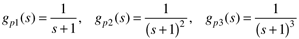
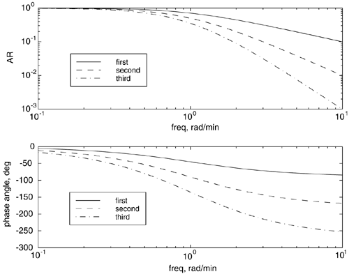
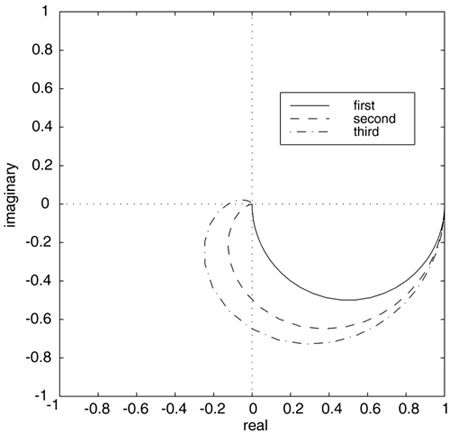
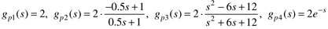
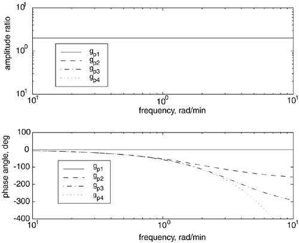
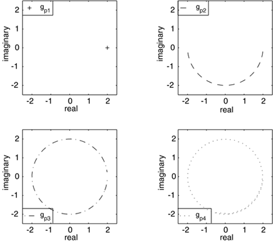

| [ Team LiB ] |
|
7.3 Effect of Process Parameters on Bode and Nyquist PlotsIn this section we stress the effect of process parameters and the concepts of "all-pass" and "nonminimum phase." Effect of Process OrderConsider the following first-, second-, and third-order transfer functions.  The Bode plot is shown below in Figure 7-6. The higher order transfer functions have amplitude ratios that decrease more rapidly with frequency, and the phase angles asymptotically approach larger (more negative) values (-180° and -270° for the second- and third-order processes). Figure 7-6. Bode plots. Comparison of first-, second-, and third-order systems with a gain of 1 and time constants of 1 minute. The corresponding Nyquist plot is shown in Figure 7-7. The first-order system stays in the first quadrant, asymptotically approaching the origin along the imaginary axis. The second-order system goes into the second quadrant and asymptotically approaches the origin along the real axis from the negative direction. The third-order system passes into the third quadrant and asymptotically approaches the origin along the positive imaginary axis. Figure 7-7. Nyquist plots. Comparison of first-, second-, and third-order systems with a gain of 1 and time constants of 1 minute. As the frequency increases, the curves go from (1,0) to (0,0). Concepts of "All-Pass" and "Nonminimum Phase"Consider the following four transfer functions,  where the first transfer function is a pure gain, the second and third are Padé approximations (first and second order, respectively), and the fourth is a pure time delay. The Bode plots are shown in Figure 7-8. Notice that all these transfer functions have an amplitude that is constant (does not vary with frequency). A transfer function with a constant amplitude ratio is called all-pass because all frequencies are directly transferred from input to output with no change in magnitude. Figure 7-8. Bode plots. Comparison of different processes with an amplitude ratio of 2. Also, notice that the phase angle is different for each transfer function. A transfer function is "minimum phase" if there is no other transfer function that has the same amplitude ratio, with a larger phase angle. In this case, the first transfer function (gain with no dynamics) is minimum phase, while all of the others are non-minimum phase. The high frequency asymptotes of the first- and second-order Padé approximations are –180° and –360°, respectively. The high-frequency phase angle of the time delay is unbounded. The corresponding Nyquist plots are shown in Figure 7-9; each curve begins at (2,0). The constant gain remains at (2,0). The first-order Padé transfer function ends at (-2,0), which is –180°. The second-order Padé transfer function ends at (2,0), which is –360°. The time delay wraps an infinite number of times. Figure 7-9. Nyquist plots. Comparison of different processes with an amplitude ratio of 2. For each individual Nyquist plot, the frequency increases as the curve moves clockwise from the (2,0) point. Frequency Response Introductory SummaryWe have introduced Bode and Nyquist plots. You should be able to develop Nyquist plots given Bode plots and vice versa. Both analysis techniques are used for control-system tuning, as presented in the next sections. For stable systems (poles < 0) with no time delays, we can state the following general results. Let m be the order of the numerator polynomial and n the order of the denominator polynomial (the relative order is n–m).
We also can state the following about systems with time delays:
|
| [ Team LiB ] |
|